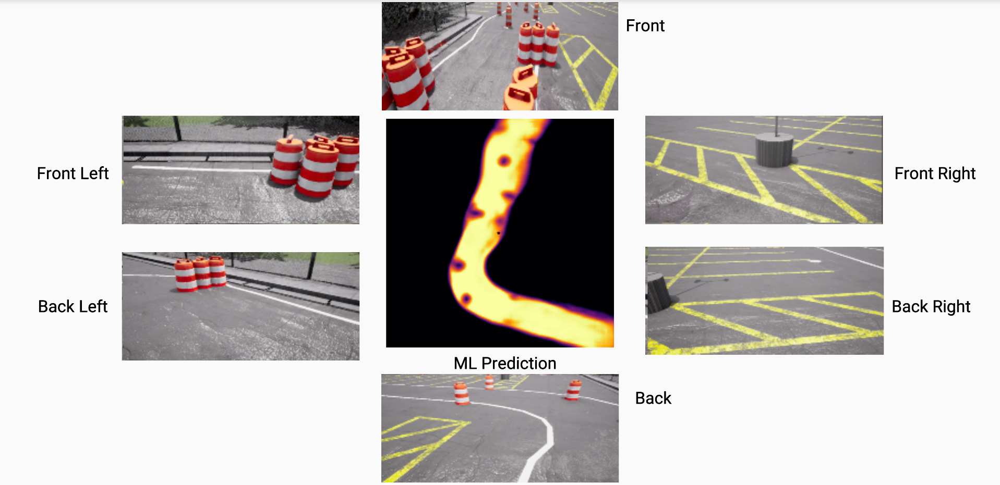

A Deep Dive into My Autonomous Vehicle Software Design Journey
Hello everyone! I’m Andrew Nash, and for the past year, I’ve been leading the software development efforts for Paradigm’s autonomous vehicle in the Intelligent Ground Vehicle Competition (IGVC). This has been an exciting journey, full of learning, innovation, and countless lines of code. In this post, I’ll walk you through the technical nuances of the software I developed and implemented. My role involved designing and implimenting all perception (including all ML models), navigation, control, and sensor code.
IGVC Auto-Nav Challenge
To compete at the 30th annual IGVC, Paradigm had to design and build an original vehicle that can autonomously navigate an obstacle course similar to the one shown below. The vehicle must stay within lane lines and avoid obstacles on an unknown track layout.
Vehicle
The mechanical design of our competition entry is a testament to the team’s innovation and engineering prowess. The vehicle’s distinctive skid-steer drivetrain, with its two separate drivetrain modules, truly stands out. This configuration enables superior maneuverability, allowing the vehicle to smoothly navigate diverse landscapes, from smooth paved surfaces to challenging off-road terrains.

Software Overview
I designed Paradigm’s autonomous vehicle software strategy with the singular aim to excel in the Auto-Nav Challenge. This competition involved navigating a course littered with dynamic obstacles, which required a software system capable of advanced obstacle detection, real-time decision-making, and swift path adjustment.
Central to this was the integration of our custom AI and localization pipelines with the ROS2 Nav2 system, a feat that I am particularly proud of. This integration allowed our software to adjust the vehicle’s path in real-time based on the identified obstacles and their estimated locations. The robustness and precision of our software were key in navigating the Auto-Nav Challenge effectively.
Vision-based Obstacle Detection and Avoidance
One of my significant contributions was incorporating advanced computer vision algorithms into our design. Our vehicle was equipped with six high-resolution cameras, capturing 360-degree visuals at 60 frames per second. Two separate instances of Cross-View Transformer (CVT) [1] processed the real-time data from these cameras. Each CVT instance generated a 256x256 matrix that represented the model’s confidence levels in the presence of an obstacle in an approximately one square inch area. I integrated these outputs into a ROS costmap for efficient path planning.

CVTs use a cross-view, cross-attention mechanism to convert individual camera features into a shared bird’s eye view (BEV) representation. I fine-tuned this model to accurately detect obstacles and predict feasible navigation areas.
Obstacle Avoidance
The two CVTs worked together to form a detailed bird’s-eye-view of the environment. While one CVT instance detected obstacles, the other, dubbed the “driveable” model, mapped feasible navigation areas around the robot. My focus on collaboration and synchronization between these two models played a crucial role in our success in the Auto-Nav Challenge.
Obstacle model sample Bird’s Eye View prediction (lighter color = higher confidence) Driveable model sample Bird’s Eye View prediction (lighter color = higher confidence) 
Mapping & Path Planning
For efficient path planning, I integrated a semantically segmented costmap into the ROS2 navigation system. This strategy involved mapping drivable areas and assigning them a negative cost value, making them more attractive paths for our vehicle.
Map generation 
I designed our perception system to feed BEV predictions into the ROS Spatio-Temporal Voxel Layer, which helped generate costmaps effectively. In creating the costmap, a two-dimensional grid representing traversal difficulty, I fine-tuned the system to discard low-confidence predictions and apply a temporal filter to reduce false positives. This fine-tuning was a critical aspect of our strategy, helping us maintain an accurate and efficient path planning mechanism.
Localization
I used the ZED2 stereo camera and the BerryGPS-IMU to accurately localize the vehicle using visual odometry, acceleration, angular velocity, and geolocation data. I used the ROS2 implemented an Extended Kalman Filter (EKF) that consolidated these diverse data inputs, providing an accurate estimate of the vehicle’s position. This localization pipeline is intentionally simple as the high FPS BEV mapping does most of the heavy lifting for navigation.
Simulation
A key element of my development process was the integration of a robust simulation environment into our development cycle. I customized the CARLA [2] simulator, based in Unreal Engine, to replicate the Auto-Nav challenge setting. This involved designing a unique Unreal Engine level that mirrored the competition area with an impressive +/- 0.5 foot accuracy. This level could also be rearranged to simulate various competition layouts for ROS navigation testing and data collection, making it a versatile tool in our development process.
Paradigm custom IGVC level in Unreal Engine
We leveraged CARLA’s ROS2 Bridge to facilitate a seamless exchange of sensor and control data between the simulator and the ROS2 environment. This enabled us to live stream a range of sensor data, including camera images, IMU readings, and GPS coordinates, directly into our navigation pipeline.
The use of the CARLA simulator for testing presented us with a myriad of benefits. It allowed us to test and debug our navigation system before the physical vehicle was fully assembled, which significantly accelerated our development cycle. Moreover, it enabled us to simulate various environmental conditions and course layouts in a controlled environment without the associated risks and costs of physical testing.
Model Training from Simulator Data
I employed the CARLA Python API to generate a diverse dataset for training our computer vision models. This involved integrating our vehicle, into the CARLA level, and adjusting the simulation’s camera positions and intrinsic parameters to match those of the real cameras mounted on the vehicle.
I then randomly placed the vehicle at different positions within the course, adjusting its orientation each time, to create a robust and diverse dataset. Factors such as the sun’s position, weather conditions, track layout, ground material, and obstacle materials were manipulated to ensure the dataset’s versatility. Total dataset size was about 30,000 image sets (6 cam input & 1 BEV ground truth).
Sample images collected from sim
Inspired by GPT, I pre-trained our CVT models on the nuScenes dataset [3], a large-scale real-world dataset, where they achieved near state-of-the-art BEV prediction performance. Pre-training these models helped them generalize BEV prediction strategies and familiarize themselves with various scenarios. The models were then fine-tuned using our custom-generated IGVC dataset. In initial testing, the CVT models operated in parallel at 58 FPS on the robot’s RTX 4080 GPU and achieved an Intersection Over Union (IoU) score of 92%, a testament to the efficacy of our simulation-based approach.
Compute Hardware
As the creator of the compute subsystem, I incorporated an assembly of high-performance computing modules and camera arrays. I equipped the “flight computer” with an RTX 4080 GPU for real-time machine-learning tasks. My choice of a Jetson Nano and a Raspberry Pi B4 module helped handle camera live-streaming and support IMU and GPS modules over the ROS network.
My design of the camera system integrated five cameras with the flight computer, Jetson Nano, and Raspberry Pi B4, along with a standalone ZED 2 camera, constantly feeding real-time visual data into the computer vision models via a router over the ROS network. I can not take credit for the control, or power subsystems, I worked with some fantastic teammates that handled that portion of the design and implementation.
GPT for Fundraising
This year, in the absence of a dedicated business team, I used GPT-4 for an unconventional task - fundraising. I designed effective prompts that enabled GPT-4 to create persuasive emails and compelling funding proposals. This innovative application of AI resulted in a successful fundraising campaign, securing $28k to entirely fund our vehicle’s fabrication and competition shipment.
Conclusion
Working on Paradigm’s autonomous vehicle software for the IGVC was a rewarding and educational experience. My journey entailed designing and implementing ROS perception, navigation, control, and sensor code, all of which were tailored to master the Auto-Nav Challenge. The advanced computer vision algorithms, efficient path planning, and robust localization approach I employed all culminated in a system that successfully navigated an unpredictable environment in real-time.
The CARLA simulation environment was instrumental in accelerating our development cycle, providing a versatile platform for testing, debugging, and data generation. I’m proud of the final results and the integral role I played in Paradigm’s success in the competition.
Stay tuned for more exciting projects and technical insights in my future posts! Thanks for reading.

References
[1] B. Zhou and P. Krähenbühl, “Cross-view Transformers for real-time Map-view Semantic Segmentation,” Computer Vision and Pattern Recognition, 2022.
[2] A. Dosovitskiy, G. Ros, F. Codevilla, A. Lopez and V. Koltun, “CARLA: An Open Urban Driving Simulator,” Conference on Robot Learning, 2017.
[3] H. Caesar, V. Bankiti, A. H. Lang, S. Vora, V. E. Lion, Q. Xu, A. Krishnan, Y. Pan, G. Baldan and O. Beijbom, “nuScenes: A multimodal dataset for autonomous driving,” Computer Vision and Pattern Recognition, 2019.
Disclaimer: Please note that some details have been simplified for the sake of readability.